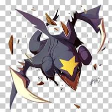

Serperior is the fully evolved grass type starter pokemon of the Unova
reigon, boasting abase stat total (BST) of 528. While this is on the lower end for starter pokemon,
Serperior is still able to hold his own in battle due to his large movepool, high speed stat
and access to the combo of leaf storm and the ability contrary. These factors untimately make
Serperior nothing to laugh at in terms of power, however he could be outclassed by late-game
pokemon.
Garchomp is the only Pseudo-legendary pokemon in the Sinnoh reigon, and is one of the most powerful pokemon to date. With a massive BST of 600, with 102 speed and 130 physical attack, Garchomp is one of the most threatening pokemon to battle against. On top of these monster stats, it also has a fantastic movepool, allowing for massive sweeps if the opponent is not careful. These all make Garchomp a formidable foe and 100% worth it to put on a team. 
Charizard is one of the most well-known pokemon to ever exist, and one of the most recognisable characters in media, and for good reason. With a BST of 534, its stats are far from bad. Getting access to a wide range of moves, as well as the amazing hidden ability Solar Power allows it to fit really well as a sun-sweeper, making it one of the best pokemon for challenge runs or even just normal playthroughs. Charizard is a very powerful option if you are in need of a fire type and should not be overlooked.
Pikachu being the mascot of pokemon has been given lots of love by Game Freak over the years, however he wasn't nearly as good in the original Pokemon Red and Blue. Pikachu has sub-par stats (besides speed, which is a pretty high 90) due to being able to evolve, and being a mixed attacker is almost never better than sticking to either physical or special. Game Freak have given Pikachu ways to be viable, such as the light ball held item which doubles its offensive stats, and giving the partner Pikachu in Pokemon: Let's Go Pikachu much better stats than a regular Pikachu. However, it is still generally better to evolve your Pikachu or use a different electric type.